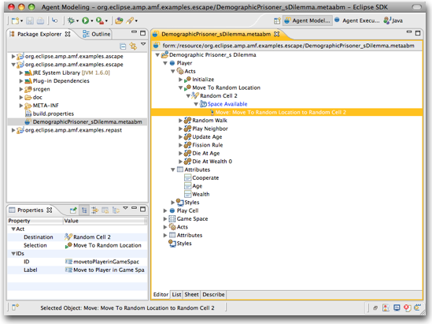

AMF provides an ABM meta-model representation, editor, generator and development environment. The AMF Acore meta-model is similar to EMF Ecore and defined in Ecore, but provides high-level support for complex agents.
AMF generates complete executable models for Escape, Ascape and Repast Simphony, as well as Java Skeletons and Interfaces, JUnit test cases and documentation and is easily extensible to support additional targets.
